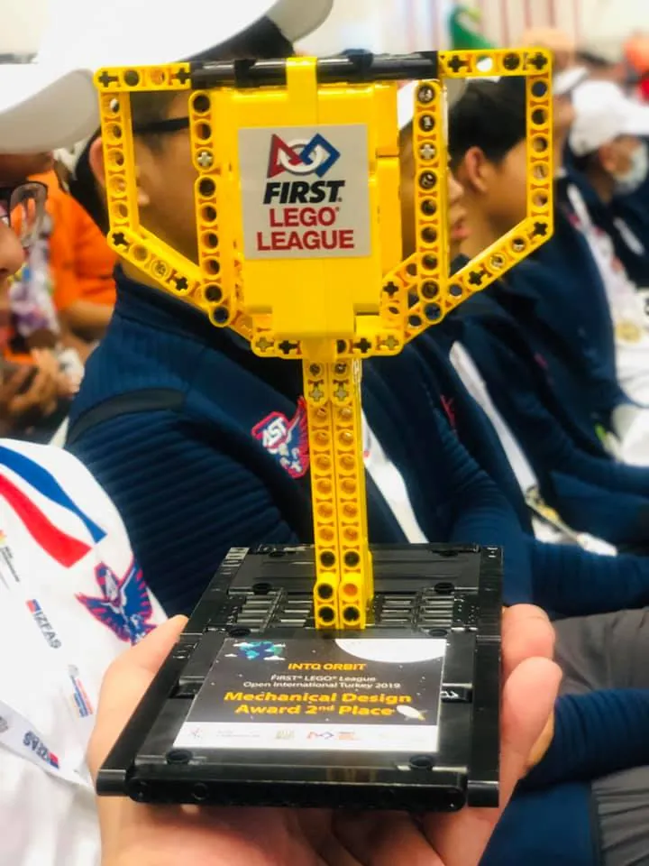
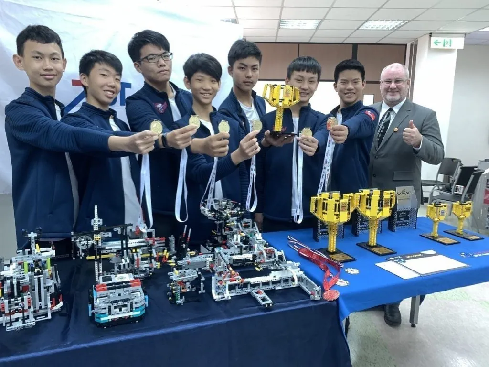
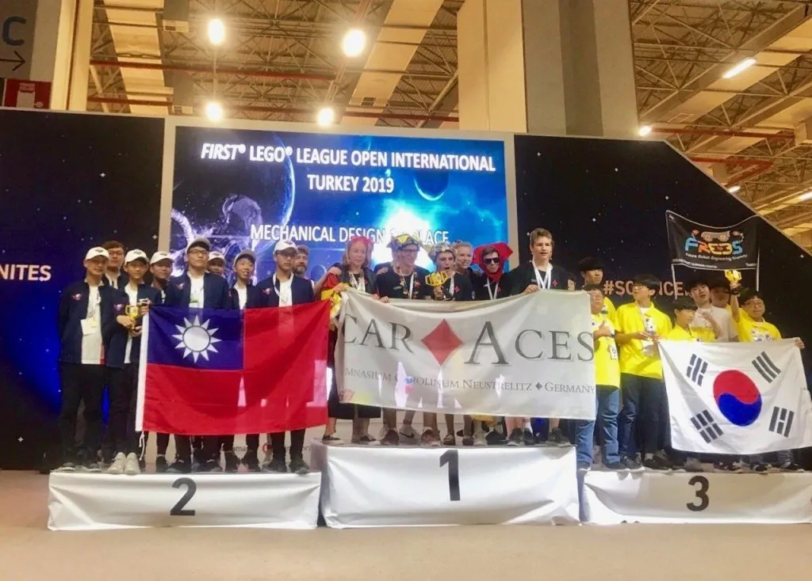

恭喜 玩樂高手團隊所帶領的
Team ASTonishing 在FLL土耳其世界賽
獲得機器人結構設計世界第二🥈
🏆Mechanical Design Award 2nd Place

這次團隊的組成主要是學校社團
藉由每週社團上課，加上賽前集訓
以及家長的支持&學生努力不懈的精神
才能獲得這次巨大的成就！🎉

這項競賽分為結構設計簡報、專題研究與團隊、機器人實作4大評分項目，學生說，透過與太空人的信件往返，了解他們執行任務時會有思鄉、情緒煩躁、肌肉萎縮等問題，特別設計以VR設備、透過即時影像幫助他們與家人互動及運動，解決此問題。

台中美國學校校長Mr. Keen表示，在全球推廣STEM（Science、Technology、Engineering、Math）教育，學生們從參賽到世界賽，遇到問題都自己解決，展現實力，值得肯定，台中美國學校也爭取到VEX在台灣區中部比賽的主辦權，今年底將主辨VEX在台灣區的機器人比賽。